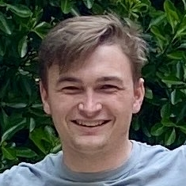

Simulating artificial microbes from organelles to evolution
This website is under construction. Please come back later.
Protobiota is an artificial life (A-life) simulation—software that replicates the structures and processes of organisms and simulates them in a virtual environment. Our project focuses on protozoa-like single-cellular organisms, and we sought to demonstrate large-scale phenomena such as evolution and speciation.
In our simulation each cell has various substructures, such as nuclei and mitochondria, that operate by very simple rules. We can, however, observe more complex behaviors emerging from these basic processes. For example, the cells exhibit homeostasis (maintaining internal equilibrium), chemotaxis (food-seeking), and metabolism (digesting nutrients). We show that these organisms can adapt to internal and external pressures through natural selection and develop self-sustaining processes.
Meet the Team
-

Max Cole
-

Ethan Doll
-
Wyatt Holliday
-

Sasha Rosenthal
-

Myles Scholz
Project Partner
Bill Pfeil
Senior Instructor I
Oregon State University
Built with Godot and GDExtension
Godot is an open-source game engine that we used as a framework for Protobiota. It handles much of the rendering, UI, and physics behavior of the simulation. Additionally, we used GDExtension--an interface of Godot that allowed us to write custom nodes in C++.